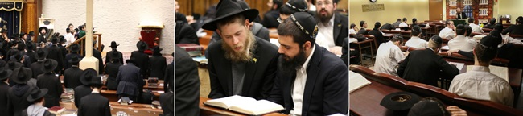

אחי התמימים, בשליחות המלך ברחבי תבל! בשנת תשי”ט, הקים אחד הרבנים ארגון תחת השם “
בשנת תשי”ט, הקים אחד הרבנים ארגון תחת השם “קהלות קודש עבור ישראל”, ושיגר מכתב לרבי שליט”א בו הוא מציע לרבי לכהן כ”נשיא כבוד” של הארגון.
אחי התמימים,
בשליחות המלך ברחבי תבל!
בשנת תשי”ט, הקים אחד הרבנים ארגון תחת השם “קהלות קודש עבור ישראל”, ושיגר מכתב לרבי שליט”א בו הוא מציע לרבי לכהן כ”נשיא כבוד” של הארגון.
הרבי משיב, שהוא אינו יכול לקבל על עצמו תואר כזה - “נשיא כבוד” - אשר נוגד לחלוטין לתפקידם ועבודתם של נשיאי חב”ד. וזה לשונו הקדוש: “בכלל אין נוהג בבית הרב ענין של נשיאות–כבוד, שהרי כפי שכת”ר מתאר בצדק תוכן תואר זה שאין בזה “שום חיוב או עבודה ממשית” כו’, אין זו שיטת בית הרב, ואדרבה, במקום שנודעים בשם הרי–זה משום שמשתתפים בפועל, או שמשתתפים בפועל בלי שידעו בשם, אבל לקבל תואר כבוד בלי עבודה בפועל, הרי זה נגד שיטתנו” (אגרות קודש חלק ח”י, אגרת ו’תשס).
הרבי מסביר חד משמעית כי ענינו הוא לעבוד בפועל - לא להתעטר בתארים רשמיים. ואם כן, כשאנו מתכוננים לציין את יום “קבלת הנשיאות” על ידי הרבי, יו”ד שבט - הרי יהיה זה “נגד שיטתנו” אם נתמקד בתוכנו הרשמי של היום, הסכמת הרבי להקרא בתואר “כ”ק אדמו”ר שליט”א”, אך נתעלם ממהותה של העבודה בה החל הרבי לעסוק החל מיום זה.
המשימה אותה לקח הרבי על עצמו, ובשלה הוא נקרא בתואר “נשיא” - היא השליחות להמשיך את השכינה למטה, ולהביא את הגאולה בפועל בדורנו זה! זה, ולא אחר, הוא ענינו של יום קבלת הנשיאות לו אנו מתכוננים.
*
ואם הרבי מסרב להקרא “נשיא כבוד” - בעקבותיו גם אנחנו, כחסידים, מוכרחים להזהר מלהפוך חלילה ל”חסידים של כבוד”. לא התואר הרשמי או הלבוש החיצוני - רק ההשתתפות בפועל בעבודה זו, שהחלה מיום קבלת הנשיאות ועד לשיחות האחרונות של ה”דבר מלכות”, היא זו המזכה אותנו בהגדרה “חסיד” ו”מקושר”.
חייבים להתמסר לעבודה! להיות אחד כזה ש”מציאותו, וכל עניניו, נעשים קודש לנשיא הדור על ידי זה שמלאים וחדורים בקיום שליחותו של נשיא הדור” - כן, השליחות הזו בדיוק - “שענינו העיקרי הוא “להביא לימות המשיח” בפועל ממש”.
וכמובן, מתוך ההכרזה בשמחה גדולה ובביטול עצום:
“יחי אדוננו מורנו ורבינו מלך המשיח לעולם ועד!”
מענדי
קבוצה ע”ו, 770 בית משיח

לאחר תפילת שחרית במניין של הרבי מלך המשיח שליט”א מתקיימת שמחת ה’אפשערניש’ לחייל בצבאות ה’ ממשפחת שפינדלר מקנדה.
את שיעור הדבר מלכות השבועי, שלאחר תפילת מנחה במניין של הרבי שליט”א, מוסר השבוע הת’ מ”מ פש שי’.
יום שני, כ”ג טבת
לאחר הסדרים מתקיים ברוב עם ובהקהל סדר לקוטי שיחות השבועי - כאשר כל תמים יושב בחברותא עם תמים בוגר מישיבה אחרת, ויחדיו לומדים בשקידה מתורת הרבי שליט”א. לסיום נערכות הגרלות הפרסים המסורתיות.
בהמשך, נערכות התוועדויות רבות לרגל ליל כ”ד טבת, יום ההילולא של אדמו”ר הזקן.
ההתוועדות השבועית הקבועה, מתקיימת בפינה הצפונית מזרחית ביתר שאת וביתר עוז. התמימים מתעוררים בדבר ההכרח להביא את התגלותו של הרבי שליט”א ברגע זה, ודנים על דרכי הפעולה בנושא.
הרה”ח יוסף חיים קנטור, שליח הרבי מלך המשיח שליט”א לתאילנד, מתוועד במערב 770 ומספר על גודל הזכות לחיות בחיי שליחות, כשהפעילות כולה נעשית על כתפיו הרחבות של המשלח - הרבי מלך המשיח שליט”א.
בנוסף, מתקיימת התוועדות הקהל מרכזית ברוב עם, עם האורח השוהה כאן בימים אלו, הלוא הוא הרה”ח יוסף יצחק וילשאנסקי שי’, ראש ישיבת חח”ל צפת. הרב וילשאנסקי מתוועד שעות ארוכות ב’געצל שול’, והתמימים מאזינים בשקיקה לסיפורים הרבים הקולחים מפיו כדרכו בקודש, ובעיקר למסר וההתעוררות - למצוא בכל התוועדות ובכל ענין את הנקודה הפנימית של הקהל, “ליראה את הוי’”, על ידי ההתקשרות העמוקה לרבי שליט”א.
בשעת לילה מאוחרת, מתקבצים כמה תמימים סביב הרה”ח דוד נחשון שי’, והתוועדות ספונטנית נוצרת. מפיו של הרב נחשון קולחות בשטף פנינים אודות ימי התייסדות הטנקים בארץ הקודש, ובעיקר - על הליווי הצמוד וההוראות המפורטות שקיבל מהרבי מלך המשיח שליט”א בכל צעד ושעל בנושא. התמימים מרותקים לסיפוריו שעות ארוכות.
יום שלישי, כ”ד טבת
במשך היום, מוסיפים רבים בלימוד תורתו של אדמו”ר הזקן - בעל ההילולא - בנגלה ובחסידות, כהוראת הרבי מלך המשיח שליט”א.
הפתעה מרעננת במיוחד נחשפת היום ב–770. לאחר שכבר שבועיים אנו אוחזים בימי ההכנה ליו”ד שבט - יוצא לאור המבצע “יש לנו רבי” שעל ידי ארגון את”ה העולמי. מבצע זה חובק עולם ומאחד את כל התמימים ברחבי תבל, אך כמובן שהמוקד המרכזי והעיקרי המשפיע לעולם כולו הוא 770.
עוד טרם נחשפו הפרטים במלואם, ועל אף שחומר הלימוד במסגרת המבצע יחולק רק בתחילת השבוע הבא - תלמידי התמימים אכן נענים בהתלהבות ועוקבים בדריכות אחר המודעות.
המשימה הראשונה במסגרת המבצע היא ההגעה לסדר חסידות ערב ‘על הדקה’ וניצול הזמן. מי שנוכח ב–770, יכול אכן לראות כי המבצע פועל את פעולתו. בדקה הראשונה של הסדר הזאל מלא מפה לפה.
לאחר הסדרים מתקיימת התוועדות ‘הקהל’ המרכזית לרגל יום ההילולא מטעם הגבאים (דיווח במדור החדשות).
בהמשך להתוועדות הרשמית, נערכות ב–770 כמה וכמה התוועדויות. הרה”ח דוד נחשון שי’ מתוועד במערב 770, ומספר זכרונות שונים מהרבי שליט”א.
במזרח מתוועד הרה”ח יהודה ליפסקר שי’, משפיע לדוברי אנגלית בישיבת חח”ל צפת. הוא מתוועד באנגלית שעה ארוכה, בחיות השמורה לו, ומדבר על מעלת המקום שבו אנו נמצאים - 770, המקום היחיד בו ניתן להרגיש באמת עד כמה התגלותו של הרבי מלך המשיח ברגע הקרוב היא מוחשית.
ברחבי 770 ממשיכים להתקיים עוד ועוד מוקדים פעילים של התוועדויות באהבת רעים, מתוך שמחה וטוב לבב, עד השעות הקטנות של הלילה.
יום רביעי, כ”ה טבת
לאחר תפילת שחרית עם הרבי מלך המשיח שליט”א, מתקיימת התוועדות חגיגת הבר–מצוה למשפחת ספרנוביץ’ שי’ מנחלת הר חב”ד.
הערב מתקיים, כמידי שבוע, השיעור המרכזי לכלל תלמידי ה’קבוצה’ בעניני גאולה ומשיח. השיעור עוסק בשיחת ה’דבר מלכות’ השבועי - אודות פטירת השליח הרב משה יצחק העכט - בה מבאר הרבי שהסתיימה עבודת השליחות ועומדים מוכנים לגאולה. כמו כן מתעכבים בשיעור על חשיבות הלימוד בכתבי רבותינו נשיאנו אשר פורסמו ויצאו לאור באישוריו ועידודיו הרבים של הרבי שליט”א.
לאחר הסדרים מתקיימת במרכז 770 התוועדות לרגל סיום הלכות עירובין והתחלת הלכות שביתת עשור ברמב”ם.
יום חמישי, כ”ו טבת
בשעת צהריים, זמן קצר לאחר תפילת מנחה עם הרבי מלך המשיח שליט”א - מגיעים ל–770 קבוצת תמימים מאורגנת של תלמידי ישיבת תומכי תמימים באנטוורפן. הם עולים לתורה ומברכים ‘הגומל’, ואחר כך פונים לנצל את הזמן היקר מכל בבית משיח ללימוד בהתמדה.
לפני תפילת ערבית, נעמדת קבוצת התמימים לתמונה על רק ארון הקודש. מיד אחר כך מתפרצת שירת ה’יחי’ כהכנה לתפילה וכולם נעמדים ומתכוננים לכניסתו של הרבי מלך המשיח שליט”א.
לאחר הסדרים מתקיים השיעור העיוני השבועי בעניני גאולה ומשיח. השבוע, הוא מתקיים ביתר שאת וביתר עז - כיוון שאחת ממשימות מבצע ההכנה ליו”ד שבט, היא ההשתתפות בשיעור זה.
את השיעור מוסר הרה”ח חיים שמריהו סגל שי’, ר”מ בישיבת חח”ל צפת, בנושא “תקופות בימות המשיח”, על פי שיחתו הידועה של הרבי מלך המשיח שליט”א בנדון.
בהמשך הלילה מתקיימות בשמחה ובטוב לבב התוועדויות חסידים שונות ברחבי 770, כמידי ליל שישי. ביניהן - התוועדות סיום הרמב”ם המסורתית במרכז 770, לרגל סיום הלכות שביתת עשור והתחלת הלכות שביתת יום טוב.
יום שישי, כ”ז טבת
המשימה היומית במסגרת מבצע ההכנה, היא ההשכמה לסדר חסידות בוקר - “הסדר של הרבי”. התמימים משתתפים בסדר זה מתוך חיות מחודשת.
לאחר תפילת שחרית עם הרבי מלך המשיח שליט”א, יוצאים תלמידי התמימים להפוך את העיר לקראת קבלת פני משיח צדקנו. כמה וכמה סיבות מצטרפות להגברת החיות והחשק במבצעים. אם בשל העובדה שהמבצעים הסדירים חוזרים היום לאחר שבועות של ימי חופש וכדומה, אם בזכות ימי שישי המתחילים לחזור ולהתארך, אם בגלל ההכנות ליו”ד שבט - או פשוט, סתם כך, כי נמצאים ברגעים האחרונים שלפני ההתגלות.
ליל ש”ק פרשת וארא, כ”ח טבת
יום הולדת אם המלך
עם כניסת השבת נוהר קהל החסידים בהמוניו לבית חיינו, בית משיח 770.
בין הקהל מופצים החוברות השבועיות של ועד חיילי בית דוד; והפעם בכותרת ‘חובת הציות’ מוגש לקט מרתק אודות החובה שהיא זכות - לקיים בנאמנות את הוראותיו הקדושות של הרבי שליט”א במילואן.
חוברת נוספת המחולקת בקהל, מכילה את מאמרי ‘באתי לגני’ מהרבי הריי”צ ומהרבי מלך המשיח שליט”א, כולל במיוחד את אלו השייכים לשנה זו.
זמן קצר מספיקים אנ”ש והתמימים לשקוע בתורת החסידות ובשיחות הרבי שליט”א; להתבונן בדבריו אודות מעלתה של שבת זו, המברכת את חודש שבט ויו”ד שבט - זמן המעורר את כולנו להתקשר לרבי ולהיות “חדורים בקיום שליחותו . . להביא לימות המשיח בפועל ממש”.
מספר דקות לפני מועד תפילת קבלת שבת - בשעה 17:15 - פורצת שירת ה’יחי’ בשמחה רבה, לקראת כניסתו של הרבי מלך המשיח שליט”א לתפילה.
לאחר “לכה דודי” מתפרצת שוב לבת האש היוקדת, בסיומו של שבוע נוסף בו ההתגלות המיוחלת עדיין לא באה. הקהל רוקד על מקומו, קופץ ומנגן שוב ושוב מתוך אמונה וציפיה - “יחי אדוננו מורנו ורבינו מלך המשיח לעולם ועד”!
יום הש”ק פרשת וארא, כ”ח טבת,
יום הולדת אם המלך
עם שחר משכימים אנ”ש והתמימים לאמירת התהילים של שבת מברכים, במנין הרבי מלך המשיח שליט”א, בשעה 8:30.
לאחר התפילה מתכוננים להתוועדות הקודש עם הרבי מלך המשיח שליט”א, מתוך ביטחון שהשבת נזכה סוף סוף לשמוע את דברי הקודש מפיו, “תורה חדשה מאתי תצא”. מתוך ביטחון זה, מנגנים הקהל בעוז את שירת ה’יחי’, אומרים ‘לחיים’ לרבי מלך המשיח שליט”א, ומתחזקים בכל עניני השליחות היחידה שנותרה.
רבים מעיינים בשיחת שבת זו משנת תשנ”ב, בה מעורר הרבי לקבל החלטות טובות, ומבטיח “שע״י עצם ההחלטה שמחליטים בכל ענינים אלו . . תיכף ומיד ממש - עוד לפני תפילת המנחה וקריאת התורה, ולפני סיום והמשך ההתוועדות - זוכים לביאת הגאולה האמיתית והשלימה ע׳׳י משיח צדקנו!”
בהמשך להתוועדות קדשו של הרבי, מתיישבים אנ”ש והתמימים להתוועד עם החתנים שי’, לומר להם ‘לחיים’, ולברך אותם בבנין בית נאמן לרבי מיוסד על קיום שליחותו - הבאת הגאולה.
במוצאי שבת קודש נערכת התוועדות הקהל, ‘מלווה מלכה’, כהכנה ליו”ד שבט, וכן לרגל סיום הלכות שביתת יום טוב והתחלת הלכות חמץ ומצה ברמב”ם.